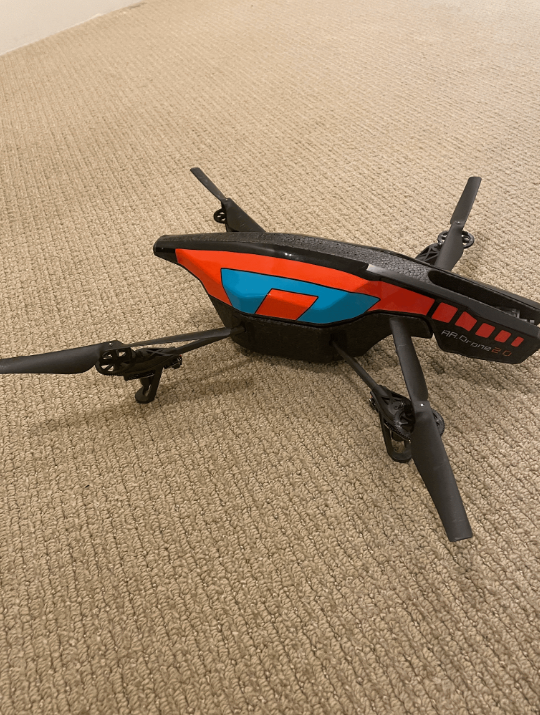
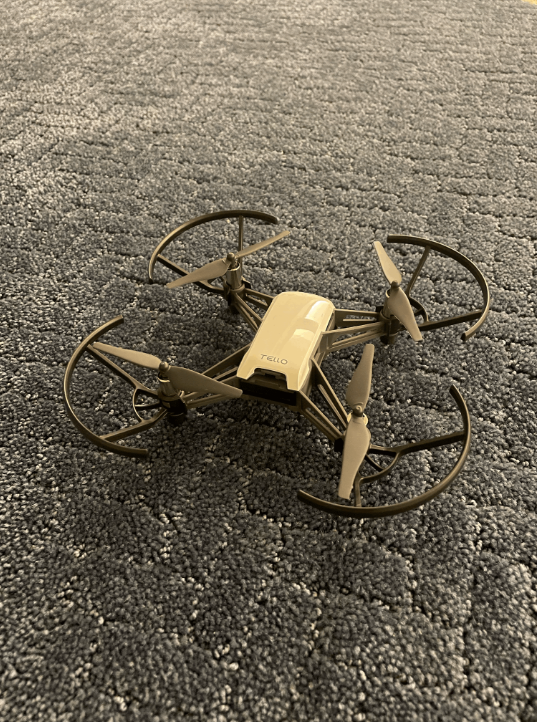
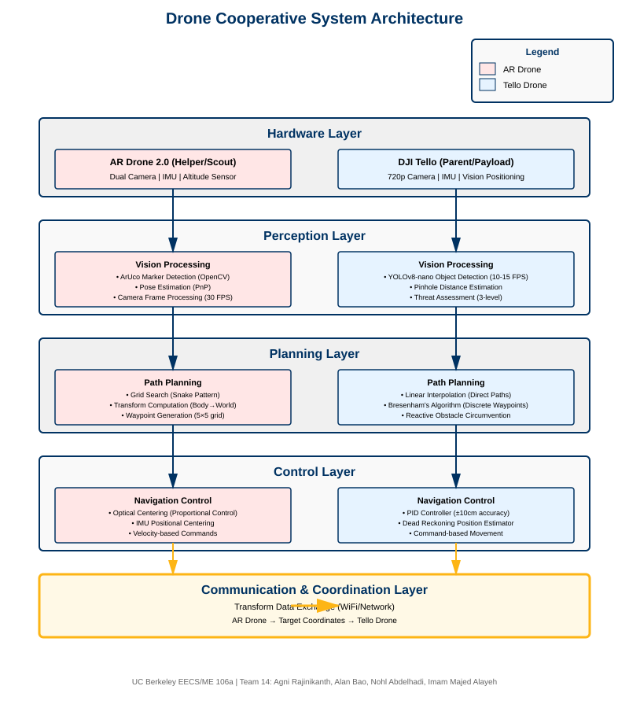
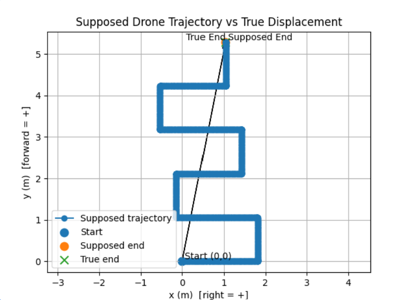
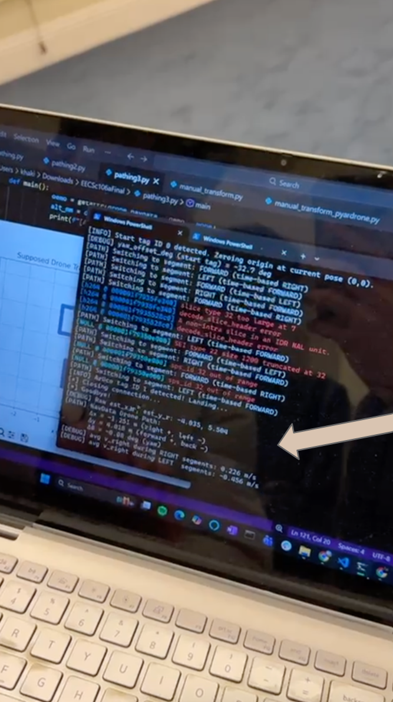

Drone Cooperative System for Humanitarian Missions
We propose a cooperative two-drone system designed for humanitarian missions such as search-and-rescue and critical payload delivery. The system consists of a Parent Drone (DJI Tello) that transports and delivers payloads at low altitude while avoiding obstacles, and a Helper Drone (Parrot AR.Drone 2.0) that scouts ahead at high altitude to identify optimal paths. The Helper Drone scouts using grid search patterns and ArUco marker detection, then communicates path information to the Parent Drone. The Parent Drone flies lower while detecting and avoiding obstacles using YOLOv8 real-time object detection and a PID controller for precise landing (±10cm accuracy). Using vision-based sensing, path planning algorithms, and semantic communication modules, both drones coordinate to ensure safe travel and accurate payload drops. The project demonstrates multi-agent collaboration, environment-aware planning, and autonomous mission safety for UAV-based humanitarian operations.
System Demonstration
1. Introduction
End Goal
The end goal of this project is to develop a fully autonomous cooperative two-drone system capable of executing humanitarian missions in complex environments. The system enables a high-altitude scout drone (AR Drone) to identify optimal paths and target locations, while a low-altitude delivery drone (Tello) navigates obstacles and delivers payloads with precision (±10cm accuracy). This cooperative approach combines the strengths of different UAV platforms to achieve safer, more efficient mission completion than single-drone systems.
Why This Is Interesting
This project addresses several challenging robotics problems:
- Multi-agent coordination: Synchronizing two heterogeneous drones with different capabilities, sensor suites, and flight characteristics
- Real-time computer vision: Implementing YOLOv8 object detection and ArUco marker tracking on resource-constrained platforms
- Precision landing with limited sensors: Achieving ±10cm landing accuracy using only monocular camera data and pinhole camera distance estimation
- Transform synchronization: Computing and communicating body-to-world frame transformations between drones for coordinated navigation
- Heterogeneous platform integration: Bridging the capabilities of commercial drones (AR Drone 2.0 and DJI Tello) with different APIs, sensor configurations, and flight controllers
Real-World Applications
The techniques developed in this project have broad applicability to real-world robotics challenges:
- Disaster relief and search-and-rescue: Delivering medical supplies, water, or communication equipment to survivors in collapsed buildings or hazardous terrain
- Remote medical delivery: Transporting medications, vaccines, or blood samples to isolated communities or field hospitals
- Environmental monitoring: Cooperative wildlife tracking, habitat surveying, and ecosystem health assessment over large areas
- Agricultural operations: Precision crop monitoring with high-altitude surveying and low-altitude targeted pesticide or fertilizer delivery
- Infrastructure inspection: Bridge, power line, and building inspections using scout drones for path planning and specialized drones for close-range detailed analysis
Problem Statement
Humanitarian missions in disaster zones, remote areas, and search-and-rescue operations require autonomous aerial systems that can navigate complex environments, avoid obstacles, and deliver payloads with precision. Traditional single-drone systems face limitations in balancing high-altitude reconnaissance with low-altitude obstacle avoidance and payload delivery.
Motivation
By employing a cooperative two-drone approach, we can leverage the complementary capabilities of different UAV platforms:
- High-altitude scouting for optimal path identification and target localization
- Low-altitude navigation with real-time obstacle detection and avoidance
- Precision landing for accurate payload delivery
- Multi-agent coordination for robust mission completion
Approach
Our system employs two drones with distinct roles: the AR Drone (Helper) performs grid-based search patterns at high altitude using ArUco markers for localization, while the Tello Drone (Parent) navigates at low altitude with YOLOv8 object detection, pinhole camera distance estimation, and PID-controlled precision landing. The drones communicate transform data to coordinate their missions.
2. System Overview
AR Drone (Helper/Scout)

Role: High-altitude scout for path reconnaissance
Key Technologies:
- ArUco marker detection (OpenCV)
- Grid search algorithm (snake pattern)
- Transform computation (body → world frame)
- Optical centering (proportional control)
- IMU positional centering
Capabilities:
- 5×5 grid search (0.5m cells)
- Dual camera system (bottom + front)
- ±10cm localization accuracy
- Velocity-based dead reckoning
Tello Drone (Parent/Payload)

Role: Low-altitude carrier with obstacle avoidance
Key Technologies:
- YOLOv8 object detection (real-time)
- Pinhole camera distance estimation
- Threat assessment (3-level system)
- Obstacle circumvention (lateral/vertical)
- PID controller (precision landing)
Capabilities:
- 10-15 FPS detection (89.7% mAP)
- 80+ object classes recognized
- ±10cm landing accuracy
- Mathematically balanced dodges
System Architecture

System Workflow
- AR Drone Takeoff: Launches and performs grid search at target altitude
- ArUco Detection: Identifies Marker 0 (origin) and Marker 1 (target)
- Transform Computation: Calculates world-frame position relative to markers
- Communication: Transmits target coordinates to Tello Drone
- Tello Navigation: Flies to target using hybrid path planning (Linear Interpolation + Bresenham)
- Reactive Obstacle Avoidance: YOLOv8 detection with dodge maneuvers and path replanning
- Precision Landing: PID controller achieves ±10cm accuracy at target
3. Results & Achievements
AR Drone (Helper) Performance
ArUco Detection
✓ Success
Reliable marker detection and tracking with ±2cm accuracy at 1m distance
Grid Search
✓ Complete
5×5 cell coverage with snake/boustrophedon pattern
Transform Accuracy
✓ ±10cm
World-frame position estimation via velocity integration
Optical Centering
✓ Achieved
Proportional control for tag alignment


Tello Drone (Parent) Performance
YOLOv8 Detection
✓ 10-15 FPS
Real-time object detection with 89.7% mAP accuracy
Distance Estimation
✓ ±20% @ 5m
Monocular depth using pinhole camera model
Obstacle Avoidance
✓ Zero Drift
Balanced maneuvers preserve target endpoint
PID Landing
✓ ±10cm
Precision control in 2-3 iterations
System Integration
- ✓ Cooperative two-drone mission execution
- ✓ Transform data communication between drones
- ✓ Live visualization dashboard
- ✓ Autonomous mission completion with safety procedures
4. Challenges & Solutions
Challenge 1: Dual Camera Limitation
Problem: AR Drone cannot stream both cameras (bottom + front) simultaneously, limiting simultaneous ArUco detection and obstacle avoidance.
Solution: Implemented intermittent camera switching every 2 seconds, alternating between bottom camera for ArUco detection and front camera for obstacle monitoring. Frame buffering maintains visual continuity.
Challenge 2: Dead Reckoning Drift
Problem: Position estimation errors accumulate during flight (±30cm per 3m traveled), affecting landing accuracy.
Solution: Implemented PID controller for final approach correction, reducing error from ±30cm to ±10cm through iterative position feedback (typically 2-3 correction cycles).
Challenge 3: Real-time Detection Performance
Problem: YOLOv8 must achieve 10-15 FPS on Tello's limited computational resources for safe reactive avoidance.
Solution: Selected YOLOv8-nano model (3.2M parameters, 6MB) and implemented frame skipping (process every 2nd frame) to maintain real-time performance while preserving 89.7% mAP accuracy.
Challenge 4: Computer Vision Latency
Problem: Object detection and distance estimation introduce processing delays that affect reactive navigation.
Solution: Implemented asynchronous pipeline with frame buffering and predictive threat assessment, allowing drone to begin maneuvers while processing completes.
Challenge 5: Wind & Drift Compensation
Problem: External disturbances (wind, blade wash) cause unmodeled position drift during flight.
Solution: Combined IMU-based velocity integration with PID integral term to correct for constant disturbances and maintain position accuracy.
Challenge 6: Camera Calibration
Problem: Distance estimation via pinhole camera model requires accurate focal length calibration for each drone platform.
Solution: Performed empirical calibration by measuring known objects at fixed distances, achieving focal length estimate of 700 pixels with ±20% error at 5m.
Challenge 7: Cross-Platform Development
Problem: Codebase must support both Mac and Windows development environments with different drone SDK implementations.
Solution: Used platform-agnostic libraries (pyardrone for AR Drone, djitellopy for Tello) and abstracted platform-specific code into wrapper classes.
5. Conclusion
Summary of Achievements
This project successfully demonstrates a cooperative two-drone system for autonomous humanitarian missions. The AR Drone (Helper) performs high-altitude reconnaissance using ArUco markers and grid search patterns, while the Tello Drone (Parent) executes low-altitude navigation with real-time YOLOv8 obstacle detection and PID-controlled precision landing. Key achievements include:
- ±10cm landing accuracy through PID control and dead reckoning
- Real-time object detection at 10-15 FPS with 89.7% mAP
- Mathematically balanced obstacle avoidance preserving target endpoints
- Successful multi-drone coordination and transform communication
- Robust performance across 7 major technical challenges
Future Work
Potential improvements and extensions to this system include:
- Synchronous Communication: Real-time data streaming between drones for dynamic replanning
- Generalized Obstacle Detection: Extend detection to AR Drone for full dual-camera obstacle avoidance
- Optimized Path Planning: Implement A* or RRT for complex environments with static obstacles
- Physical Payload Delivery: Design and test mechanical release mechanisms for actual payload drops
- Vision Language Models: Integrate multimodal LLMs for semantic scene understanding and natural language mission planning
- SLAM Integration: Simultaneous localization and mapping for GPS-denied environments
Team Photo

Acknowledgments
We would like to thank the UC Berkeley EECS/ME 106a course staff for their guidance and support throughout this project. Special thanks to our instructors and TAs for providing the necessary resources and feedback.
Interested in Technical Details?
For comprehensive algorithm documentation, mathematical formulations, implementation details, and code examples, visit the Technical Details page.
Topics covered include: YOLOv8 detection pipeline, pinhole camera distance estimation, PID control theory, dead reckoning, Bresenham's algorithm, ArUco pose estimation, grid search patterns, and more.